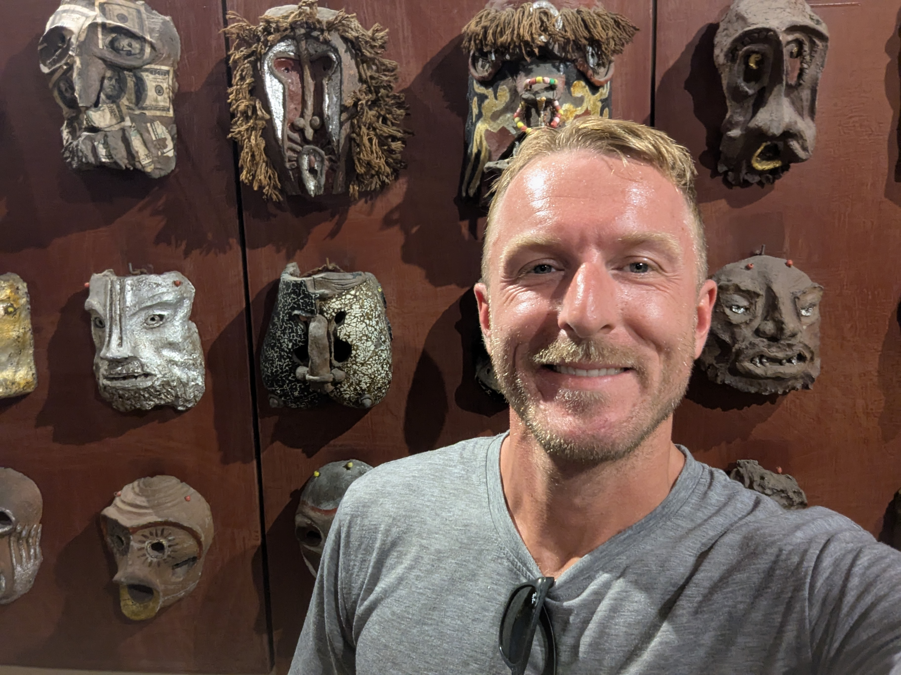
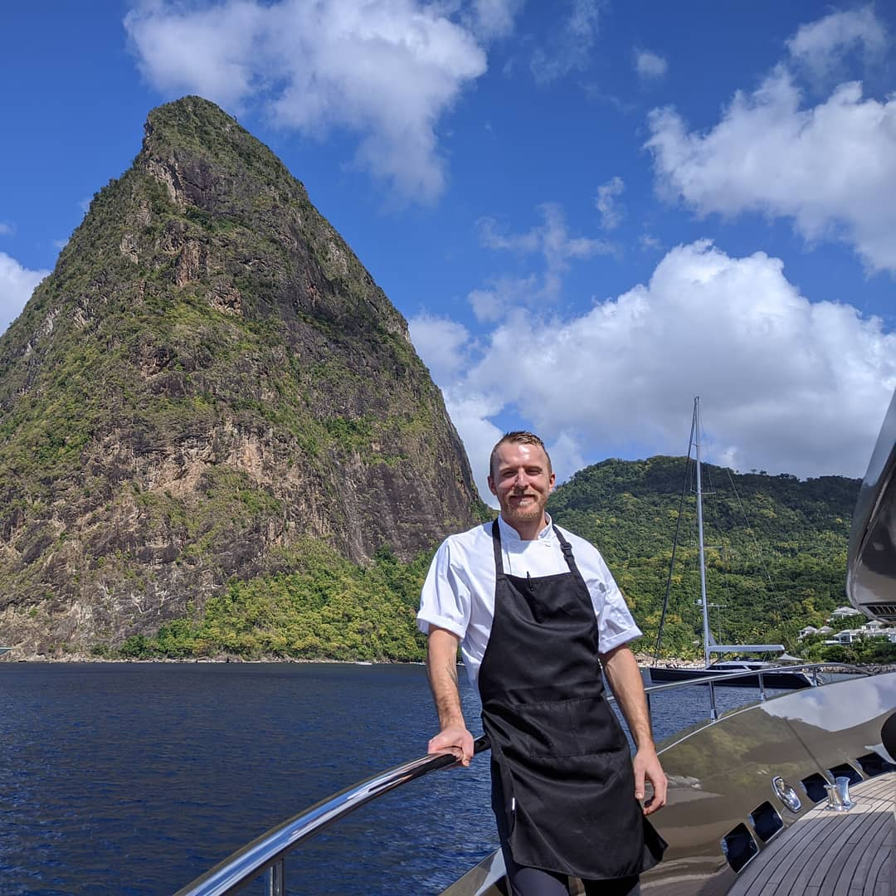
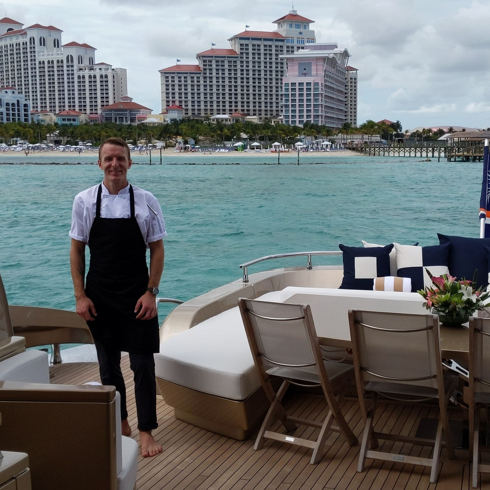
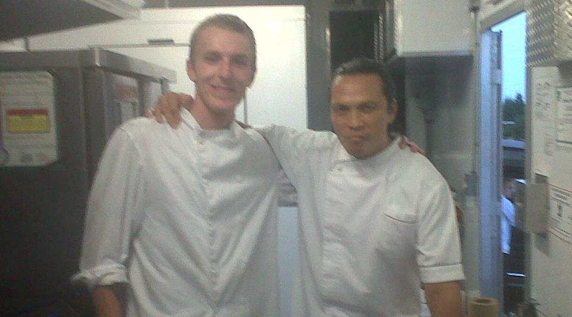
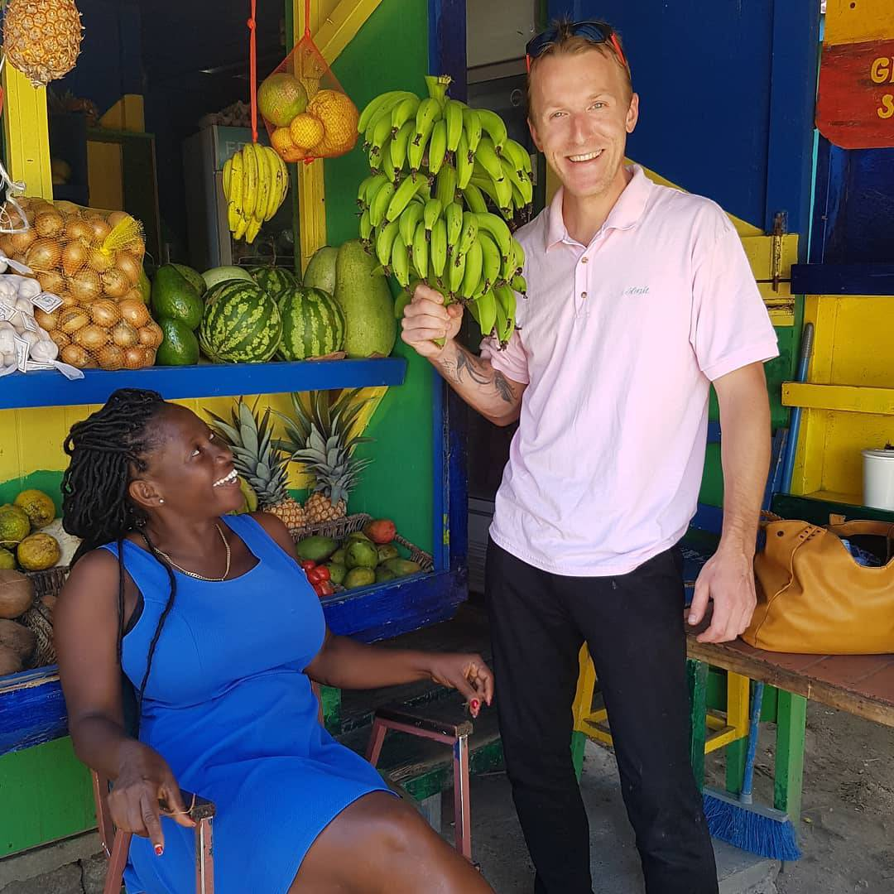

About
Why Mekong QA Advisory exists
The industry standard in overseas manufacturing is broken. Traditional sourcing brokers chase volume and factory relationships, while conventional auditing agencies send rotating junior staff with generic checklists. I operate entirely differently.
I built Mekong QA Advisory on a single, non-negotiable premise: I answer exclusively to you. There are no factory kickbacks, no commission incentives tied to plant throughput, and no corporate layers hiding behind bureaucratic reports. I provide an independent, on-the-ground technical defense in Southeast Asia that locks in your specifications, verifies production data, and protects your capital before a container ever leaves the dock.
The culinary and operational pedigree
That uncompromising standard is backed by nearly twenty years of hands-on leadership in elite professional kitchens, luxury hotels, and private superyachts. Holding a diploma from the Culinary Institute of Canada and a Red Seal certification, my career as a chef required absolute accountability for every ingredient, strict cold-chain management, complex global provisioning, and relentless consistency under intense operational pressure.
Years in private yachting also instilled a strict habit of discretion: the exact standard I bring to every client relationship and every finding I report.
-

-
-
-
Personal
BOriginally from Nova Scotia, Canada, my time outside of plant-floor verification is spent exploring Southeast Asia, sailing, alpine snowboarding, adventure motorcycling, and training in Muay Thai.
When you hire Mekong QA Advisory, you deal directly with me. No junior handoffs, no middle management, and no administrative bloat—just direct, experienced representation on the factory floor.
-

-

-

-
